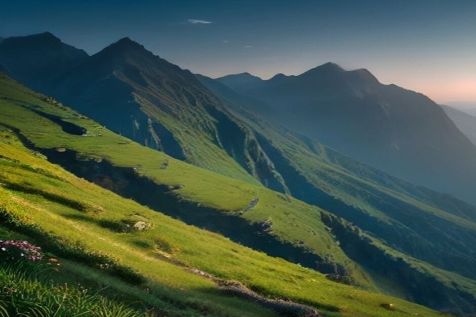
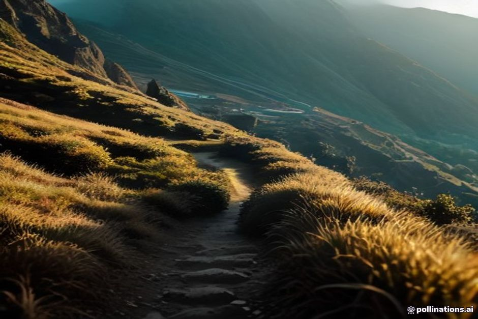

Todo el mundo camina por la Levada do Furado o ve el amanecer desde Pico do Arieiro y da el día por bueno, pero la red de senderos de Madeira suma cientos de kilómetros repartidos por todos los niveles de dificultad. Así se comparan realmente las diez mejores rutas de la isla —longitud, dificultad, normas de reserva y qué se obtiene a cambio del esfuerzo—, clasificadas de la más fácil a la más difícil.
1. Vereda dos Balcões (PR11) — la más fácil, desde Ribeiro Frio
Esta es la ruta para quien tenga reparos a la hora de hacer senderismo en Madeira. Desde el inicio del sendero en Ribeiro Frio, el PR11 sigue la Levada da Serra do Faial durante aproximadamente 1,5 km a través de un denso bosque de laurisilva, con un desnivel casi nulo, antes de terminar en un "balcón" de roca con una vista amplia y despejada de los picos centrales. La mayoría está de vuelta en el aparcamiento en menos de 90 minutos, incluido el tiempo en el mirador. Aun así, requiere una reserva gratuita de franja horaria en SIMplifica, como cualquier otro sendero PR numerado.

2. Levada Nova, de Arco da Calheta a Ponta do Sol — fácil, tranquila y costera
Un paseo llano por una levada municipal entre bancales de plataneras en la soleada costa suroeste, la Levada Nova recibe solo una fracción de la afluencia de las rutas de más renombre del interior. No es un sendero PR clasificado, así que no exige reserva en SIMplifica: basta con presentarse, seguir el canal de agua y disfrutar de un par de horas realmente tranquilas con vistas al mar en lugar de bosque de laurisilva.
3. Levada das 25 Fontes (PR6), Rabaçal — la clásica
La ruta con la que abre cualquier guía, y se lo ha ganado a pulso: unos 9 km de ida y vuelta desde la Casa Florestal do Rabaçal por un camino de levada mayormente llano, que termina en un anfiteatro natural cubierto de musgo alimentado por decenas de pequeños manantiales. La reserva a través de SIMplifica cuesta alrededor de 3 € por adulto, y el agua está lo bastante fría como para que la mayoría se limite a meter los pies en lugar de nadar.
4. Levada do Risco (PR6.1), Rabaçal — el añadido rápido
Comparte el primer tramo con 25 Fontes antes de separarse, y el Risco alcanza la cascada de caída única más alta de Madeira en menos de una hora por trayecto. La pega es un túnel sin iluminar de unos 800 metros: lleva una linterna frontal, porque cruzarlo solo con la linterna del móvil resulta bastante angustioso.
5. Vereda do Caldeirão Verde (PR9), Queimadas — la ruta de los túneles
Con inicio en el Parque Forestal das Queimadas, cerca de Santana, el PR9 recorre unos 6,5 km de ida (13 km ida y vuelta) a través de cuatro túneles volcánicos sin iluminar hasta una poza verde bajo una cascada de 100 metros. Sobre el papel está clasificado como fácil-moderado, pero los tramos estrechos y expuestos sobre el barranco hacen que se sienta más serio de lo que sugiere la distancia. La reserva cuesta alrededor de 4,50 € por persona.
6. Levada do Furado (PR10), de Ribeiro Frio a Portela — la larga travesía
Con unos 11 km de ida, el PR10 es la ruta más larga de esta lista y la que pilla desprevenidos a quienes esperan otro paseo tranquilo por una levada. Atraviesa bosque de laurisilva y varios túneles con caídas realmente expuestas a un lado, y a la mayoría de los caminantes les lleva entre 4 y 5 horas, más el transporte de vuelta desde Portela. Aquí un paso firme importa más que en cualquier otra ruta de las que siguen en esta lista.
7. Ampliación del Caldeirão do Inferno (PR9.1) — solo para los más en forma
Añadida al final del Caldeirão Verde, esta prolongación de 45 minutos a una hora lleva hasta una segunda cascada más remota que la mayoría de los excursionistas de un día se saltan por completo. Es más tranquila precisamente por eso, pero el camino se estrecha todavía más y a veces se cierra tras desprendimientos: comprueba su estado en SIMplifica por separado, y no la intentes si ya estás cansado tras los primeros 6,5 km.
8. Vereda da Ponta de São Lourenço (PR8) — sin sombra, sin bosque, pura geología
La ruta más árida y desnuda de la isla: 8 km de ida y vuelta por una cresta volcánica pelada, con el océano a ambos lados y sin nada de sombra en todo el recorrido. Está clasificada como fácil-moderada en cuanto a forma física, pero la exposición al sol y al viento hace que se sienta más dura de lo que sugiere la distancia. La reserva cuesta alrededor de 4,50 € por adulto, y el tramo final hasta Ponta do Furado lleva años cerrado por riesgo de desprendimientos.
9. Levada do Norte, tramo de Cabo Girão — moderada y la más cercana al mar
Este tramo de la Levada do Norte recorre lo alto del acantilado sobre Cabo Girão y desciende hacia Fajã dos Padres, combinando camino de bosque con vistas al mar reales que la mayoría de las levadas del interior nunca ofrecen. No forma parte del sistema PR de SIMplifica, así que no hay ninguna reserva que gestionar. Además, resulta que termina cerca de la única cala de esta lista a la que se puede llegar por mar: Fajã dos Padres es una parada habitual en una excursión privada en barco con Chifbay, así que una caminata matinal de bajada y un baño vespertino desde el barco forman una combinación fácil si dispones de un coche de alquiler para moverte entre los dos puntos.
10. PR1, de Pico do Arieiro a Pico Ruivo — la más difícil
La famosa caminata de cresta entre el tercer y el primer pico más altos de Madeira tiene unos 7 km de ida, con unos 500 metros combinados de subida y bajada, y cruza varios túneles volcánicos sin iluminar y tramos estrechos con caídas verticales a ambos lados. Desde su reapertura en 2026 tras los daños de los incendios forestales, ahora se recorre en un solo sentido desde Pico do Arieiro, con reserva a través de SIMplifica por 10,50 € por persona, y los residentes y los menores de 12 años caminan gratis tras registrarse. No es una ruta para intentar con mal tiempo o si se tiene miedo a las alturas, pero ofrece la mejor vista de montaña de toda la isla.

La costa te da el Atlántico. Los senderos te dan todo lo que Madeira construyó para llevar su agua hasta él.
Elijas la ruta que elijas, reserva tu franja horaria en SIMplifica con unos días de antelación en temporada alta, lleva una linterna para los túneles y consulta la previsión de la montaña esa misma mañana: allí arriba cambia mucho más rápido que en la costa.